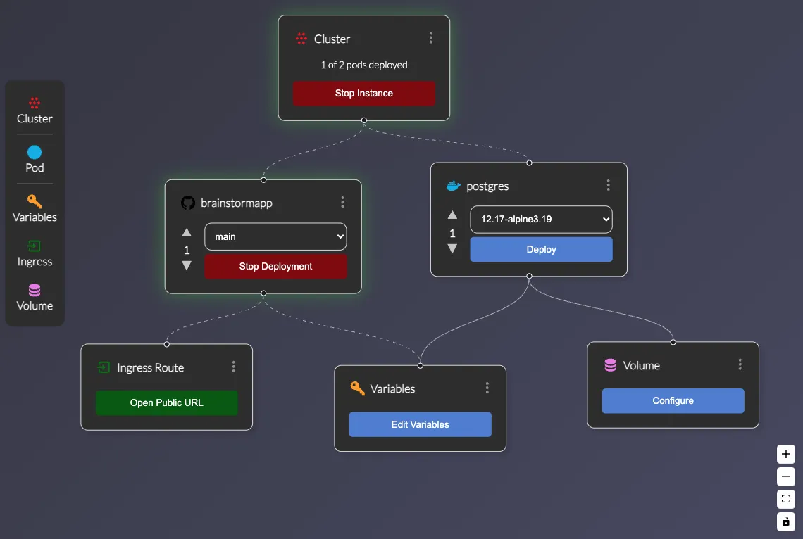
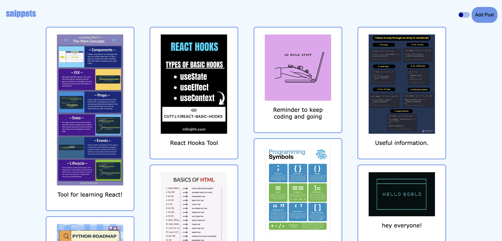

Deckhand
Software Engineer
An automated drag-and-drop Kubernetes cluster deployment open source product.
My contributions:
- Implemented Node.js as the server with Express.js to construct routes and middleware that would automate the process of creating a Docker image from a Github repository or pulling down an image from Docker Hub to gather needed information for a user’s Kubernetes cluster without them having to build it themselves.
- Generated a repository for Docker images to be held in AWS and pushed these images to the cloud with exec commands in Node.js to AWS ECR for the user to simplify the image and repository fabrication process exponentially.
- Integrated Github OAuth for sign-in verification that allowed the open source product access to the user’s private and public repositories to make deploying one’s project in a Kubernetes cluster simpler and time effective, having all needed files in one place.
- Collaborated with a team of engineers, distributing tasks, assigning roles, and managing using Atlassian Jira and Agile Scrum processes to ensure cohesive team collaboration and successful achievement of sprint objectives.
- Incorporated Jest as the testing framework to test the frontend React components and the backend middleware, ensuring the code was behaving as expected and needed.

Snippets
Software Engineer
A social media application for coders to connect and share advice/solutions.
My contributions:
- Leveraged React to create reusable components that could be rendered on the screen for the user, keeping the codebase clean and organized.
- Utilized React hooks to enhance the UI/UX expierence, adding light-and-dark mode and automatically updating the feed with useEffect.
- Used RESTful APIs to add posts and pull posts from the SQL database and utilized buckets to store images to have access to them on the cloud for all users.
